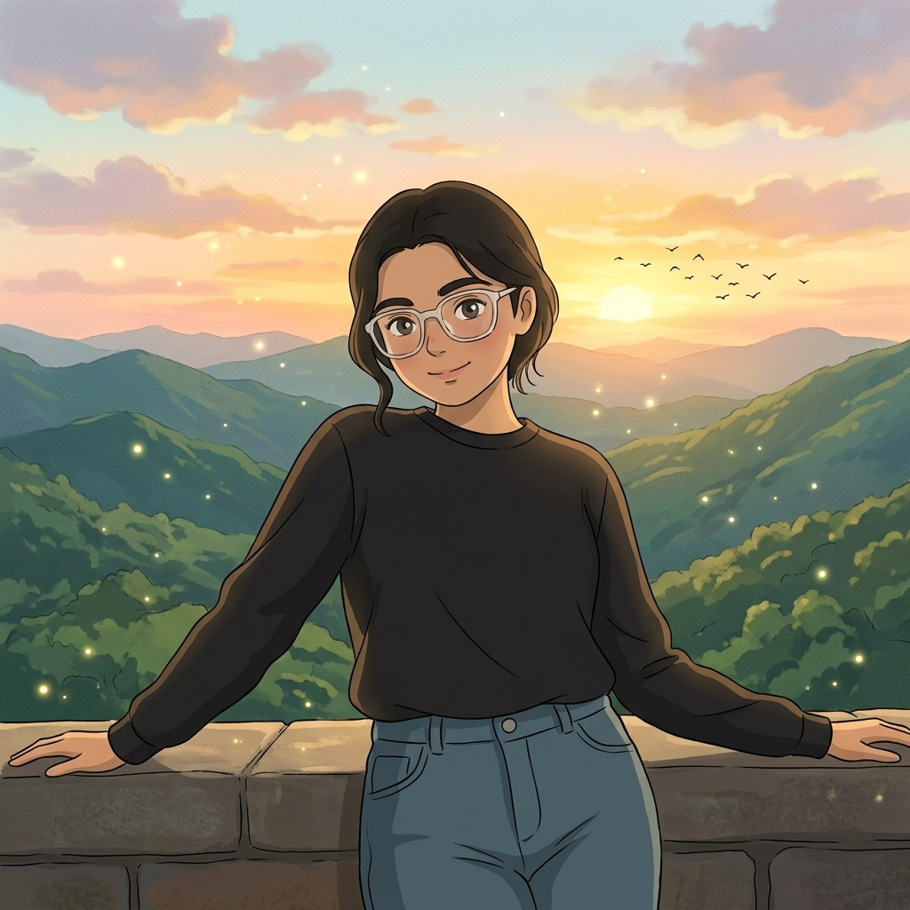
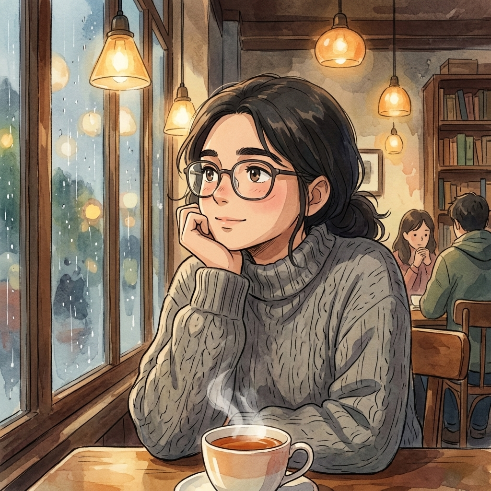
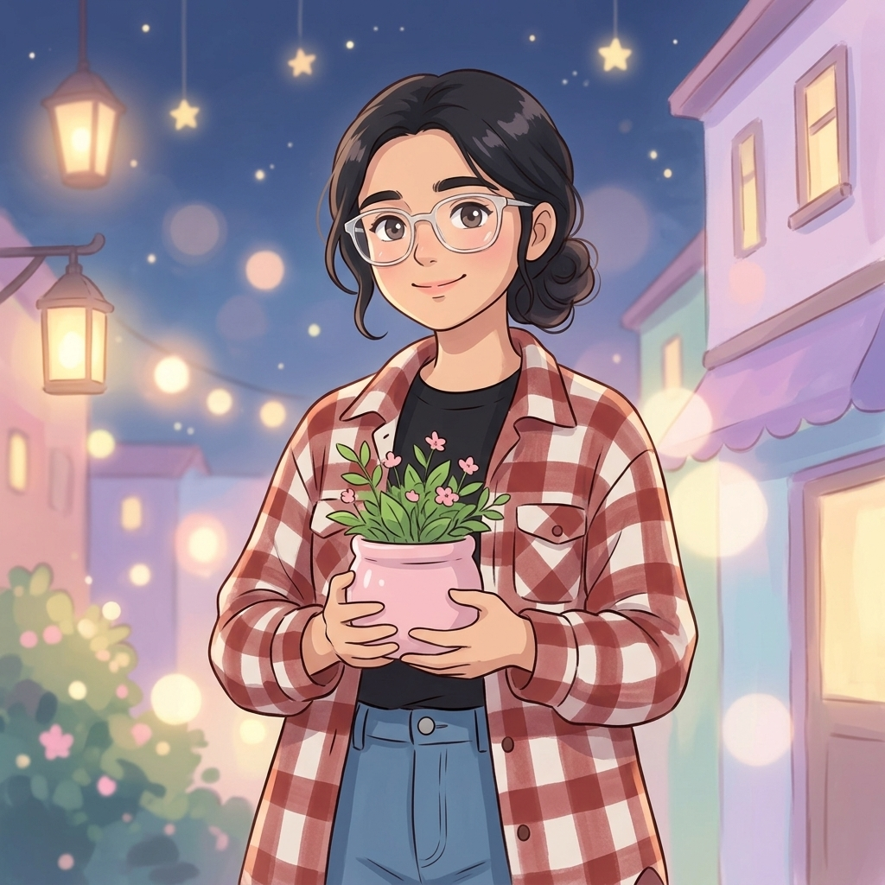
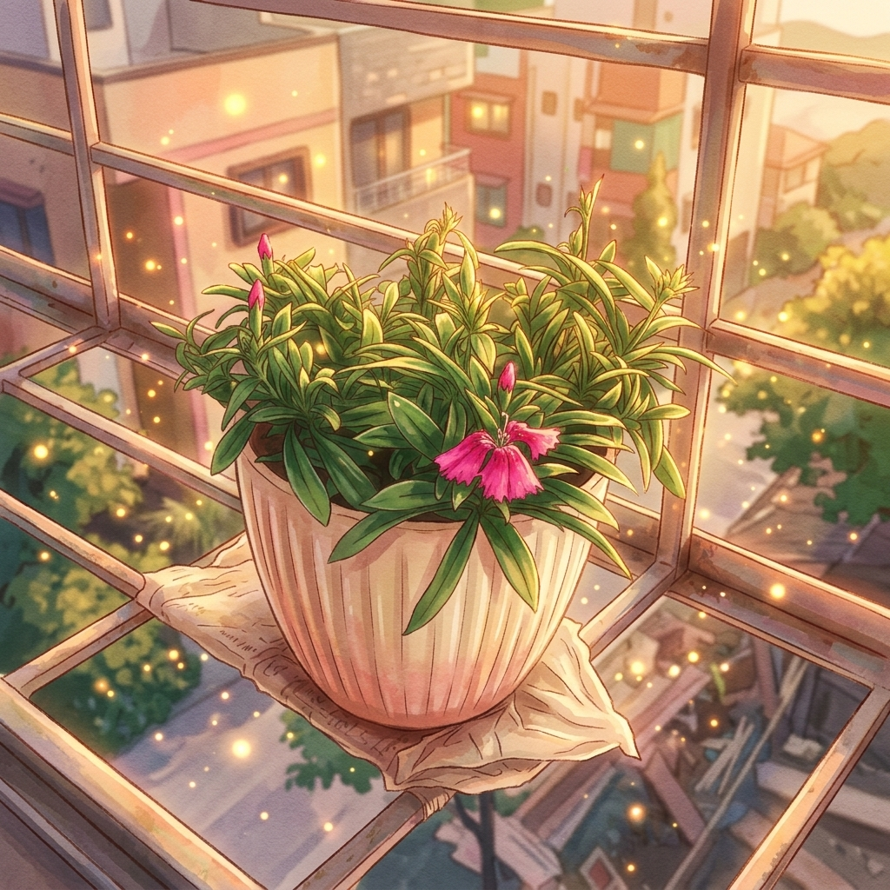

Hey, Zhilmil...
I know it’s been almost 3 months since we last talked, and honestly, I also understand if you never wanted to talk to me again after everything that happened between us.
Things ended badly because of my mistakes, misunderstandings, and the fights we had, and for that, I’m genuinely sorry.
I’m not messaging you to force anything or make things uncomfortable again. I just felt that before moving ahead in life, there were a few things I genuinely wanted to say from my heart at least once.

A Small Update
Actually, I also wanted to ask what’s the update regarding the L2 interview you gave for Input Zero, or if there’s any update about the further process?
And yeah… I got an offer too, as you probably already saw in the group. Hoping everything goes well 🤞🏻
New Horizons
By tomorrow morning around 11 AM, I’ll be reaching Delhi. Since the work location is Noida, I’ll probably be shifting there soon…
To be honest, these last few months made me realize a lot of things. Even though we stopped talking, somewhere I still missed you and always wished good things for you. That feeling never became fake for me.

When She Smiles...
I don’t know if there will ever be a chance for us to stay in contact again, and maybe that’s also one reason why I finally gathered the courage to message you today.
And don’t worry… I’m not trying to force myself back into your life. I know some distances remain forever.
I just wanted to tell you that your presence genuinely mattered to me, and somewhere it still does.
The Meadow Beyond...
So… there was just one last request from my side.
“Yahan se bahut door… sahi aur galat ke uss paar ek maidaan tha… yaad hai?”
Bas wahi jagah, last time milna chahta tha. 🙃
But shayad ye moka bhi God ji ne chin liya… 🙄
From the Heart
It’s okay. No problem.
I’m not expecting anything in return from this message. I just wanted you to know that every word I’m saying is real and honestly from my heart.
And yeah, all the very best to you too 🤞🏻
I genuinely hope you receive your offer very, very soon. You truly deserve it.

“Janam kab lena hai aur marna kab hai…
ye hum decide nahi kar sakte.
Lekin kaise jeena hai…
ye hum zaroor decide kar sakte hain…” 🌸
So… Yahi thi kahani…
Ek tha Raja, ek thi Raani.
Ye Raja to marr gaya… Lekin Raani abhi bhi zinda hai… 🫡
Thanks for coming into my life. Thanks for making moments happier, beautiful, and memorable…
Thank you. 🙂